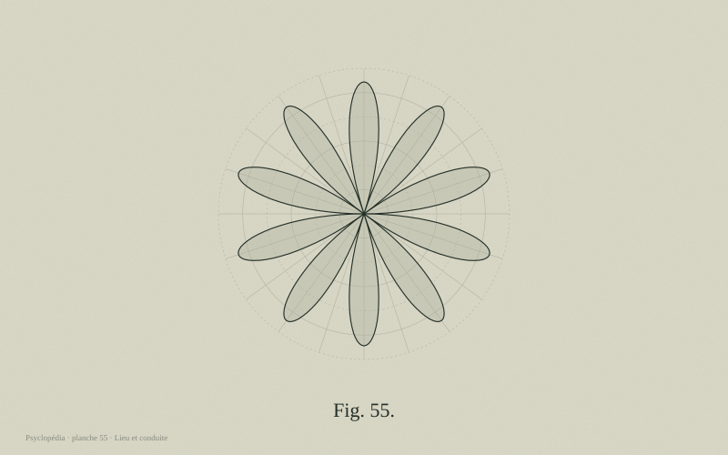

🎯 À l'issue de cette fiche, tu sauras :
- Comprendre comment l'environnement physique agit sur le comportement
- Connaître les effets documentés du contact avec la nature
- Expliquer l'écart entre conscience écologique et action
- Aborder l'éco-anxiété sans la pathologiser

L'espace agit sur nous
La psychologie environnementale étudie les relations entre l'humain et son cadre physique. Ses résultats sont souvent concrets et mesurables :
- Bruit : l'exposition chronique au bruit des transports dégrade les apprentissages scolaires et augmente le risque cardiovasculaire, indépendamment du niveau socio-économique.
- Lumière naturelle : les salles de classe et bureaux bien éclairés naturellement améliorent les performances et régulent les rythmes circadiens.
- Densité et contrôle : ce n'est pas la densité objective qui nuit, mais le sentiment de ne pas pouvoir contrôler ses interactions. Un couloir de bureau ouvert sans espace de repli est plus délétère qu'un espace dense mais modulable.
- Bureaux paysagers : une étude harvardienne a montré que le passage en espace ouvert réduit de 70 % les interactions en face-à-face et augmente les échanges écrits — l'inverse de l'objectif affiché.
- Design et criminalité : la visibilité, l'entretien et l'appropriation des espaces réduisent les incivilités bien davantage que la surveillance seule.
La nature répare l'attention
Deux théories complémentaires structurent ce champ :
- Théorie de la restauration de l'attention (Kaplan) : les environnements naturels sollicitent une attention involontaire et douce (le mouvement des feuilles, l'eau), ce qui laisse récupérer l'attention dirigée, épuisée par les tâches urbaines et numériques.
- Théorie de la réduction du stress (Ulrich) : la nature déclenche une réponse physiologique rapide de baisse du cortisol et de la tension artérielle.
L'étude princeps d'Ulrich (1984) reste emblématique : des patients opérés dont la chambre donnait sur des arbres sortaient en moyenne un jour plus tôt et recevaient moins d'antalgiques que ceux qui faisaient face à un mur de briques. Les données actuelles convergent vers un seuil d'environ 120 minutes de nature par semaine, cumulables, associé à une amélioration nette du bien-être rapporté.
L'écart entre valeurs et comportements
La grande majorité des personnes se déclare préoccupée par l'environnement, et une minorité modifie réellement ses comportements. Cet écart s'explique par plusieurs mécanismes :
- Actualisation temporelle : les coûts sont immédiats, les bénéfices lointains et diffus.
- Dilemme social : l'intérêt individuel à court terme s'oppose à l'intérêt collectif à long terme (tragédie des communs).
- Diffusion de responsabilité à l'échelle planétaire, avec report sur les autres pays, les autres générations, les entreprises.
- Distance psychologique : un risque perçu comme lointain dans le temps, l'espace et la probabilité mobilise peu.
- Effet rebond : les gains d'efficacité sont partiellement absorbés par une consommation accrue.
Ce qui fonctionne : rendre visible la norme sociale descriptive (« 75 % de vos voisins ont réduit leur consommation »), qui surpasse largement les messages culpabilisants ; agir sur les options par défaut ; donner un retour immédiat et comparatif sur les consommations ; mobiliser les identités collectives plutôt que la seule responsabilité individuelle.
Éco-anxiété : une réaction, pas une maladie
L'éco-anxiété désigne l'inquiétude persistante liée aux menaces environnementales. Elle ne figure dans aucune classification diagnostique, et c'est cohérent : c'est une réponse proportionnée à une menace réelle, pas un trouble.
Une vaste enquête internationale menée auprès de 10 000 jeunes de 16 à 25 ans dans dix pays a montré que 59 % se disaient très ou extrêmement inquiets, et que plus de 45 % rapportaient un retentissement sur leur vie quotidienne. Élément notable : la détresse était fortement corrélée au sentiment que les gouvernements trahissaient leurs engagements — c'est la trahison morale perçue, plus que la peur du climat seule, qui blesse.
Elle devient problématique lorsqu'elle produit sidération, insomnie durable, évitement de l'information ou désespoir paralysant. L'accompagnement ne vise alors pas à rassurer faussement, mais à transformer l'angoisse en capacité d'agir : passer de l'impuissance à l'action collective, doser son exposition à l'information, autoriser le deuil écologique, et maintenir des sources de joie — l'épuisement militant est un risque documenté.
Concevoir des lieux qui font du bien
Quelques principes issus de la recherche, applicables à un logement, une école ou un bureau :
- Offrir du contrôle : pouvoir régler la lumière, la température, le niveau d'interaction. Le sentiment de contrôle compte souvent plus que le réglage lui-même.
- Prévoir des espaces de repli : la théorie prospect-refuge suggère que nous apprécions les lieux offrant à la fois une vue dégagée et un adossement protecteur.
- Introduire du vivant : plantes, matériaux naturels, vues sur la végétation (design biophilique).
- Soigner les transitions : les seuils, les entrées et les couloirs structurent la manière dont on habite un lieu.
- Permettre l'appropriation : personnaliser son espace améliore le bien-être et la performance, ce que les politiques de bureaux non attribués suppriment.
Astuce d'apprentissage : lis la fiche en entier, puis teste-toi immédiatement avec les flashcards sans regarder le texte. Ce rappel actif ancre bien mieux les connaissances qu'une relecture. Reviens réviser dans 2 jours, puis dans 1 semaine, puis dans 1 mois.
🔄 5 fiches de révision — rappel actif
Clique sur chaque carte pour révéler la réponse. Essaie de répondre avant de cliquer : c'est l'effort de rappel qui fixe la mémoire.